Вимірювання передачі антен (S21/S12)
Практичний посібник для технічних спеціалістів з використанням LiteVNA та Windows
[ WORKED_EXAMPLE: 5.8 GHz ] | [ REVISION 4 ]
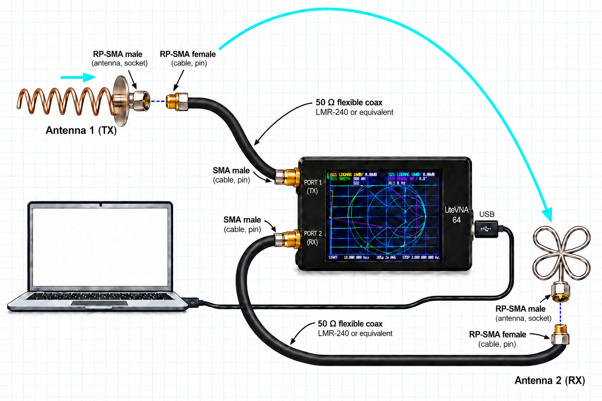
Що ми вимірюємо (і обмеження LiteVNA)
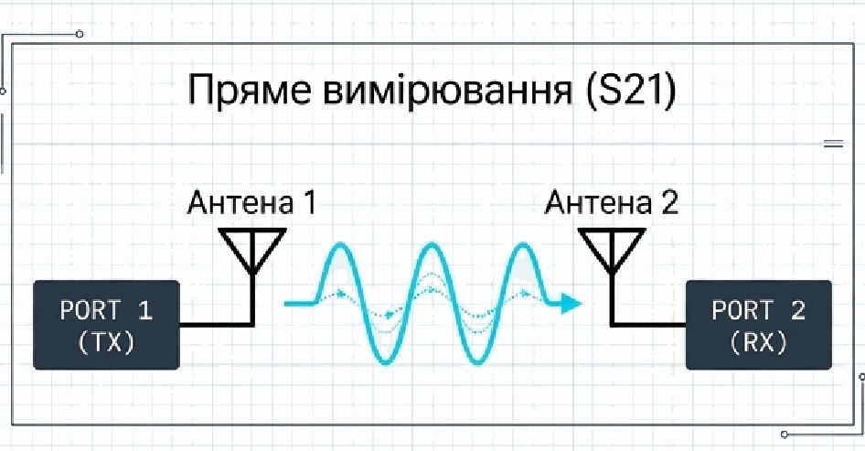
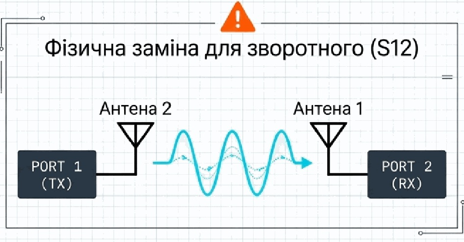
Розуміння вимірювання S21
Що показує S21
- Передачу всього радіоканалу в одному вибраному напрямку.
- Сумарний вплив обох антен та середовища між ними.
Чого НЕ показує S21
- Абсолютну ефективність окремої антени.
- Точний абсолютний gain (підсилення) без складної еталонної калібровки.
- Втрати в конструкції кріплення окремо.
Логарифмічна шкала
S21 вимірюється у dB: S21 (dB) = 20 log10|S21|.
Значення −35 dB означає сильнішу передачу, ніж −40 dB. Різниця +1 dB — збільшення прийнятої потужності приблизно у 1,26 раза.
Апаратне забезпечення та безпека
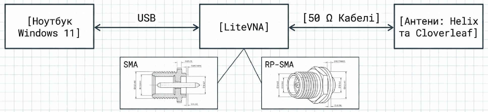
Програми для вимірювання та завантаження
NanoVNA App
Сумісність: NanoVNA та LiteVNA: підтримку заявлено для збірки v1.1.215 на DEEPELEC. NanoVNA-H/H4 належать до сімейства V1; сумісність інших моделей залежить від збірки програми та прошивки. Джерело сумісності.
Програма для Windows: керування розгорткою через USB, калібрування, відображення S11/S21 та збереження даних Touchstone. Використовуйте версію з підтримкою LiteVNA.
Завантажити для Windows — розділ NanoVNA-App
На сторінці DEEPELEC є NanoVNA-App v1.1.215 із заявленою підтримкою LiteVNA.
NanoVNA-Saver
Сумісність: NanoVNA, NanoVNA-H, NanoVNA-H4, NanoVNA-F та LiteVNA прямо зазначені у списку сумісних приладів проєкту. Підтримку інших модифікацій перевіряйте окремо. Джерело сумісності.
Альтернатива з підтримкою LiteVNA: графіки S11/S21, усереднення, сегментовані вимірювання, порівняння з опорною трасою та імпорт/експорт Touchstone.
NanoVNA-QT
Сумісність: Сімейство NanoVNA V2, зокрема V2 Plus4, згідно зі списком апаратних версій розробника. Класичні NanoVNA-H/H4 (V1) та LiteVNA не входять до заявленої підтримки цього офіційного випуску. Джерело сумісності.
Аналог для приладів NanoVNA V2. Офіційна версія не підтримує LiteVNA; для цього посібника оберіть NanoVNA App або NanoVNA-Saver.
Порівняння трьох програм
| Критерій | NanoVNA App | NanoVNA-Saver | NanoVNA-QT |
|---|---|---|---|
| Операційні системи | Windows | Windows, Linux, macOS (спосіб встановлення залежить від ОС) | Windows, Linux, macOS |
| Підтримка NanoVNA | NanoVNA; інші модифікації — за сумісністю збірки та прошивки | NanoVNA, H, H4, F прямо зазначені розробниками | Сімейство NanoVNA V2; H/H4 (V1) не входять до заявленої підтримки |
| Підтримка LiteVNA | Так, заявлена для v1.1.215 на DEEPELEC | Так, прямо зазначена у списку сумісних приладів | Ні, офіційний випуск не підтримує LiteVNA |
| Вимірювання та графіки | Керування розгорткою, графіки S11/S21 | S11/S21, Smith, амплітуда, фаза, КСХ; маркери та опорна траса | S11/S21, Smith, фаза, полярний графік, КСХ |
| Калібрування через ПК | Так | Так | Так |
| Особливості | Керування вимірюваннями через USB у Windows | Сегментовані розгортки, усереднення, TDR, порівняння трас | Інтерфейс на Qt для приладів NanoVNA V2 |
| Файли вимірювань | Збереження Touchstone | Імпорт та експорт Touchstone; експорт зображень графіків | Експорт Touchstone та CSV |
| Завантаження | DEEPELEC — NanoVNA-App | NanoVNA-Saver Releases | NanoVNA-QT |
Для LiteVNA у цьому посібнику підходять NanoVNA App зі збіркою, що підтримує LiteVNA, або NanoVNA-Saver. Назва NanoVNA охоплює різні апаратні сімейства: підтримка V1 не означає підтримку V2 і навпаки
□ Обладнання:
- Ноутбук (Windows 11)
- LiteVNA та USB-кабель
- Неметалеві стійки та рулетка
□ ВЧ-компоненти:
- Антени (напр., 5.8 GHz)
- Два 50 Ω кабелі
- Набір O-S-L та адаптер THRU
КРИТИЧНО ДЛЯ БЕЗПЕКИ:
НІКОЛИ не підключайте працюючий передавач або підсилювач до LiteVNA. Тільки пасивні антени. Уважно перевіряйте роз’єми (SMA vs RP-SMA). Різьба та центральний контакт повинні збігатися.
Підключення до Windows: NanoVNA App
- COM Port: Знайдіть порт USB CDC та натисніть Connect. Якщо порт зайнятий, закрийте інші програми.
- Sweep Range: Введіть значення Start та Stop навколо робочої частоти.
- Trace Selection: Виберіть графік S21 LogMag для передачі та S11 LogMag для відображення.
- Calibration: Розташування меню калібрування (використовуйте тільки після налаштування діапазону).
Налаштування розгортки (Sweep) та крок частоти
Вхідні дані:
Start: 5.5 GHz | Stop: 6.1 GHz | Points: 201
Математична обробка
Результат
Крок Δf = 3 MHz
Інженерна математика
Δf = (6100 - 5500) / (201 - 1)
Δf = 3 MHz
Діапазон: Встановіть розгортку навколо робочої частоти (напр., 5.8 GHz). Більша кількість точок зменшує крок, але не гарантує кращої загальної точності.
Усереднення (Averaging): Використовуйте 4–8 циклів усереднення для зменшення випадкових шумів. Увага: це не усуває статичні відбиття від стін чи підлоги.
Логіка калібрування: Уникнення подвійної корекції
НЕПРАВИЛЬНО
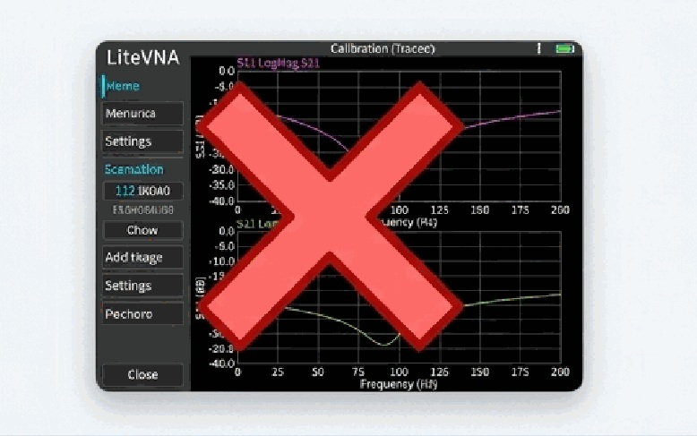
Апаратне калібрування: Дійсне лише для автономного використання приладу без ПК.
ПРАВИЛЬНО
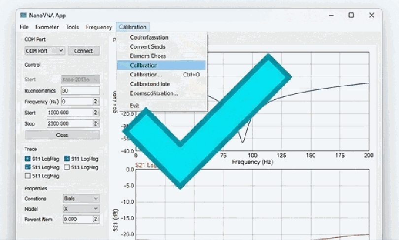
Програмне калібрування (PC Workflow): Програма керує вимірюванням і зберігає власну корекцію.
Покрокове калібрування кабелів (O-S-L-I-T)
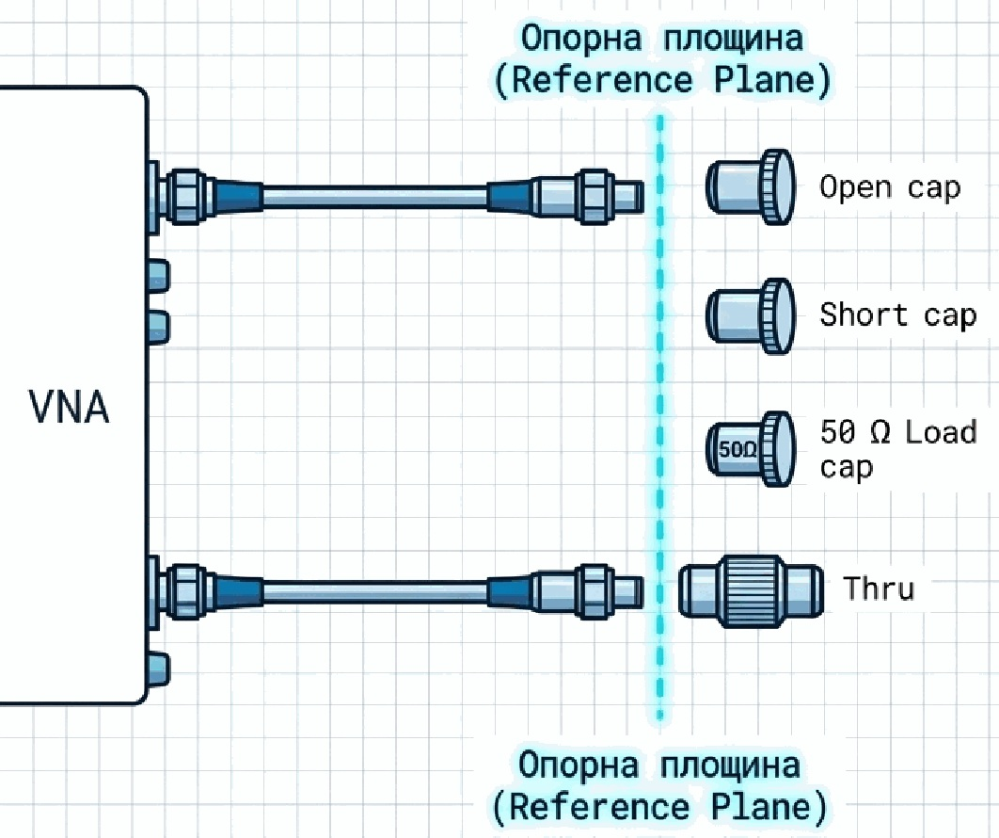
- OPEN, SHORT, LOAD: Підключіть стандарти по черзі до кінця кабелю PORT 1 (TX).
- ISOLN: Підключіть 50 Ω навантаження до обох кабелів окремо. Не з’єднуйте їх!
- THRU: З’єднайте обидва кінці кабелів за допомогою адаптера. В данному випадку SMA-MALE->SMA-MALE типу "бочечка"
Валідація після калібрування:
- Графік THRU (S21) має бути близько 0 dB (±0.5 dB).
- Графік LOAD (S11) має бути <-20 dB на робочій частоті.
Фізичне розміщення та 'Дальня зона' (Far-Field)
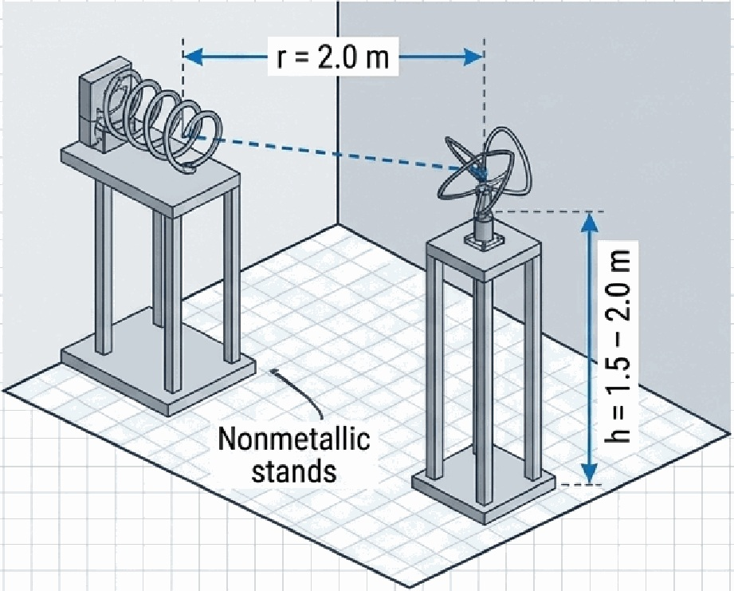
Вирівнювання та Юстування:
Спрямуйте відкритий кінець
Helix у центр Cloverleaf для отримання максимального підсилення. Якщо замість Cloverleaf використовуєте направлену антену, напрямок антен має дивитись одна на одну для максимума підсилення. Вирівняйте поляризацію та звільніть зону Френеля від людей та металу.
Engineer's Math
Оцінка: R ≥ 2D2 / λ
Якщо D = 0.18 m (максимальний розмір антени):
Навіщо потрібна дальня зона
За достатньої відстані фронт електромагнітної хвилі можна вважати приблизно плоским у межах приймальної антени. Це наближення плоскої хвилі, потрібне для застосування формули Фріса та оцінювання підсилення.
Умова R ≥ 2D2 / λ — орієнтир, а не гарантія відсутності похибки. Перевіряйте її для обох антен; для електрично малих антен також потрібна відстань, значно більша за довжину хвилі та розмір антени.
Похибка підсилення при недостатній відстані
Якщо антени розміщені поза дальньою зоною або поблизу її межі, кривизна фронту хвилі може спотворювати оцінку підсилення. Для сильноспрямованих антен із великою апертурою оцінене підсилення може бути заниженим. Величина та напрям похибки залежать від антен і геометрії вимірювання; вона не обов’язково буде малою.
Для наведеного прикладу відстань 2,0 м перевищує розрахункові 1,25 м, але не усуває відбиття від стін та інших предметів. Перевірте результат на кількох більших відстанях, враховуючи зміну втрат поширення за формулою Фріса: саме S21 з відстанню зменшується, навіть коли підсилення антен незмінне.
S21 саме по собі не є абсолютним підсиленням окремої антени: потрібні еталонна антена або інший калібрований метод, а також урахування втрат, узгодження та поляризації.
Джерело: NIST — вимірювання підсилення при обмеженій відстані між антенами
Виконання вимірювання
1. Connect
Підключіть PORT 1 до передавальної антени, PORT 2 до приймальної.
2. Live Sweep
Запустіть безперервну розгортку. Знайдіть максимум S21 за допомогою мікро-налаштувань кута антени.
3. Lock & Clear
Зафіксуйте стійки.
ВІДІЙДІТЬ від зони вимірювання. Ваше тіло критично впливає на S21.
4. Record
Запишіть значення S21 та S11 на 5.8 GHz. Збережіть графік.
Перевірка фону (Background Reality Check)
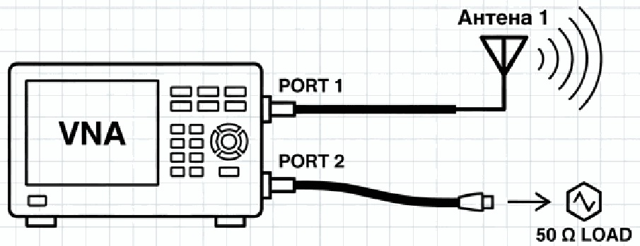
Target ≥ 20 dB
Мета: Визначає, наскільки сигнал перевищує рівень шуму приладу та небажаних витоків.
Приклад: Сигнал -38 dB, Фон -65 dB = Запас 27 dB.
Діагностика середовища: Багатопроменеве поширення
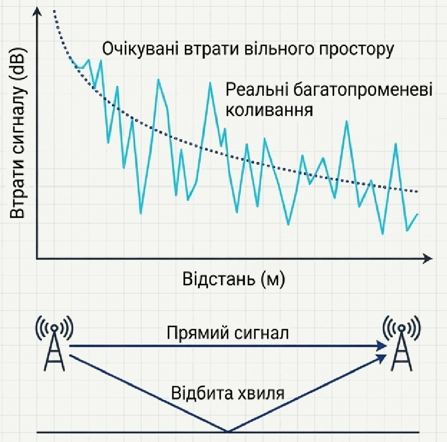
Математика зсуву відстані:
- Приклад: Відносно 2.0 м очікуйте зміну +0.92 dB на відстані 1.8 м, та -0.83 dB на відстані 2.2 м.
Мікро-зсуви (Діагностика фази):
Зміщення на 2–5 см або зміна висоти на ±10-20 см змінюють фазу відбитих хвиль (λ ≈ 5.17 см). Якщо спостерігаються сильні коливання (>2–3 dB), ваш вимірювальний майданчик має проблеми зі стоячими хвилями від підлоги або стін.
Метод порівняння A–B–A
Вимір:
Антена A
Вимір:
Антена B
Повтор:
Антена A
Кабелі, калібрування, висота та відстань = НЕЗМІННІ
Концепція: Вимірювання S21 має найвищу цінність саме для порівняння двох варіантів (наприклад, антена з корпусом і без нього, або антена X проти антени Y) в ідентичних умовах.
Збереження результатів: Формат S2P
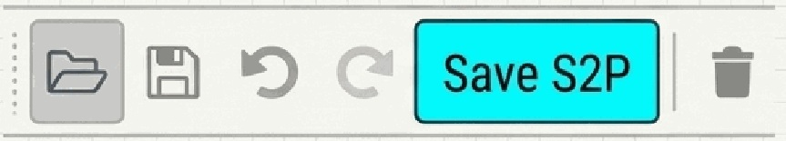
# Hz S DB R 50 # S11 S11 S21 S21 S12 S12 S22 100000 1.0 0.0 0.9 -180.0 0.0 0.0 0.0 100000 1.0 0.0 0.9 -180.0 0.0 0.0 0.0 200000 1.0 0.0 0.9 -180.0 0.0 0.0 0.0 200000 1.0 0.0 0.9 -130.0 0.0 0.0 0.0 300000 1.0 0.0 0.9 -180.0 0.0 0.0 0.0 400000 1.0 0.0 0.9 -180.0 0.0 0.0 0.0 500000 1.0 0.0 0.9 -170.0 0.0 0.0 0.0 600000 1.0 0.0 0.9 -170.0 0.0 0.0 0.0 700000 1.0 0.0 0.9 -170.0 0.0 0.0 0.0 800000 1.0 0.0 0.9 -180.0 0.0 0.0 0.0 900000 1.0 0.0 0.9 -180.0 0.0 0.0 0.0 300000 1.0 0.0 0.9 -180.0 0.0 0.0 0.0 110000 1.0 0.0 0.9 -180.0 0.0 0.0 0.0
Процедура збереження:
Зупиніть розгортку, натисніть Save S2P на верхній панелі. Формат Touchstone є стандартним текстовим форматом. Зберігайте файли для подальшого аналізу (скріншоти не дозволяють накладати графіки пізніше).
Важливе застереження щодо S2P:
Файл має колонки для всіх 4-х S-параметрів (S11, S21, S12, S22). Однак, оскільки LiteVNA не має зворотного апаратного забезпечення, наявність файлу не доводить вимірювання S12. Ці поля будуть порожніми або заповненими симульованими нулями.
Журнал вимірювань (Measurement Log)
Без правильних метаданих результати неможливо відтворити.
| Date | Variant | Freq | Dist | Height | S21 (dB) | Bgnd (dB) | File |
|---|---|---|---|---|---|---|---|
| 2026-10-04 | H01_A | 5.8 GHz | 2.0 m | 1.8 m | -38.0 | -65.0 | H01_A_r2m_run01.s2p |
Практичний чек-лист та типові помилки
| ✕ Типова помилка | ✓ Правильна дія |
|---|---|
| Подвійне калібрування (Прилад + ПК ПК одночасно). | Скинути налаштування LiteVNA (RESET), калібрувати тільки у Windows App. |
| Вважати, що LiteVNA вимірює S12 програмно. | Фізично поміняти антени на портах TX/RX для перевірки зворотної передачі. |
| Математично віднімати фонові dB від результату. | Використовувати фон ТІЛЬКИ для перевірки запасу (Margin > 20 dB). |
| Знаходитися в зоні Френеля під час тесту. | Зафіксувати стійки і відійти на кілька метрів від установки. |
| Робити гучні висновки з одного вимірювання. | Використовувати послідовність A–B–A та мікро-зсуви на ±2-5 см. |